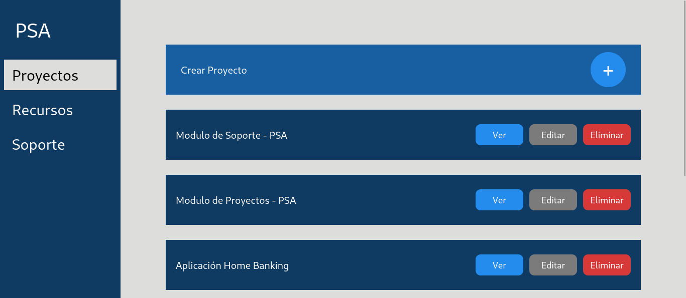
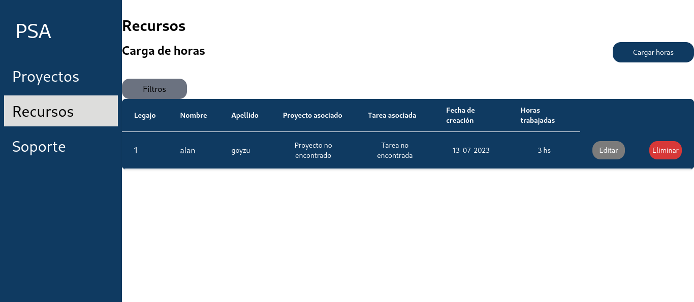
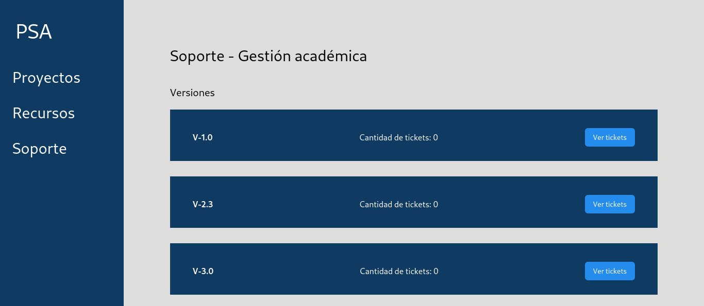
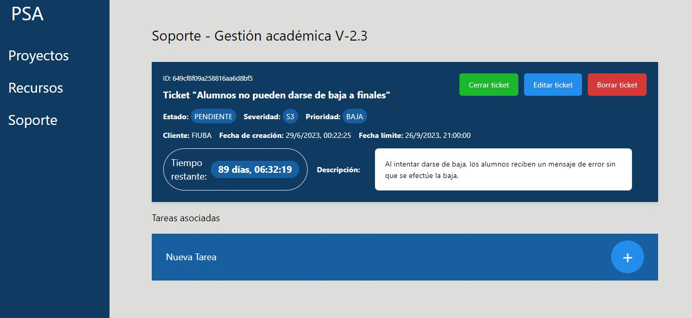

Este proyecto lo realizamos en 11 semanas para la materia "Métodos y Modelos de la Ingeniería del Software I",
trabajando primero en el backend en grupo (5 personas) y luego uniendo nuestro
trabajo con el de otros 2 grupos que habían desarrollado distintas áreas del sistema.
Nuestro grupo se encargó del área de soporte, la cual incluía el manejo y resolución de tickets. Para esto
se agrupan los tickets por producto ofrecido y versión. Cada ticket tiene una prioridad y tiempo límite para
resolución. También se pueden asignar tareas a los tickets.
Por otro lado, existe el área de proyectos, que se encarga de crear proyectos, tener tareas y poder ver
el estado de las mismas para saber cómo continuar con los proyectos. Por último, está el área de recursos, la cual se encarga
de la administración de los recursos de los proyectos. Se entiende por recurso a los empleados, pero se puede ampliar
a la maquinaría. En esta área se realiza la carga de horas en cada proyecto que se ocupa cada recurso asignado.
En conjunto, estas áreas hacen un sistema completo de gestión de proyectos, ya que incluye la planificación,
resolución de problemas y área contable de un proyecto.
Al ser un proyecto en el que los profesores simulaban ser nuestro cliente con una empresa ficticia, era primordial mostrarle un boceto de
cómo quedaría la aplicación para, de esta forma, encontrar errores y/o malentendidos antes de desarrollar el sistema. Por eso,
realicé un prototipo en Figma para poder realizar una demo del sistema.
Además, como simulábamos trabajar con un cliente, debíamos generar documentación con los requerimientos que iban surgiendo en las conversaciones
con dicho "cliente" y planificar cómo debía ser el funcionamiento del sistema. Para esto nos resultó útil crear historias de usuario.
Ya en el momento de unificar los proyectos y hacer el frontend, realicé la vista de las tareas, el form para poder
crear las tareas y ayudé con el estilo de algunos elementos para que se vea mejor.
En esta sección me voy a centrar en el funcionamiento del área de soporte. Para empezar se necesita tener productos y sus versiones. Luego, cuando se quiera crear un ticket, se ingresa por el producto y versión y se crea el ticket con un form donde se piden los datos como título, descripción, prioridad y severidad. Una vez que existe un ticket lo que se puede hacer es acceder al mismo para ver su información más detallada y también se puede crear una tarea que esté asociada a dicho ticket. Esta tarea, también se puede asociar a un proyecto, por lo que en el sección de proyectos se podrá visualizar. Esa tarea se le puede asignar a un empleado (recurso) y luego, cuando este empleado la termine, podrá realizar la carga de horas por la tarea, marcar como finalizada la tarea y cerrar el ticket.
Para realizar los prototipos se utilizó Figma y el proyecto final se realizó en Next.JS y lo publicamos con render para poder tener un link con el proyecto funcional. Además internamente interactúa con una API REST que realizamos desde cero.
Vista general de proyectos
Vista de un proyecto en particular

Vista general de recursos
Vista del form para cargar horas

Vista general de productos

Vista general de versiones de un producto
Vista general de tickets

Vista del form para crear un ticket

Vista de un ticket en particular
El proyecto se encuentra en el siguiente repositorio: Ir al código.
Además, para más información del backend, se puede ver la API REST.